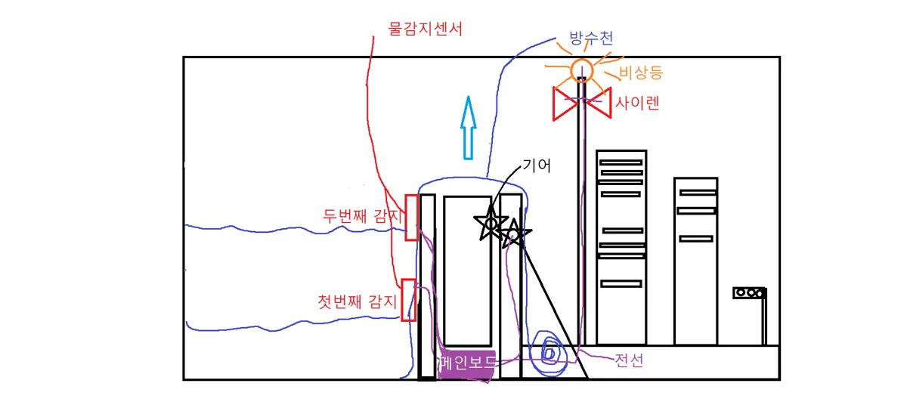
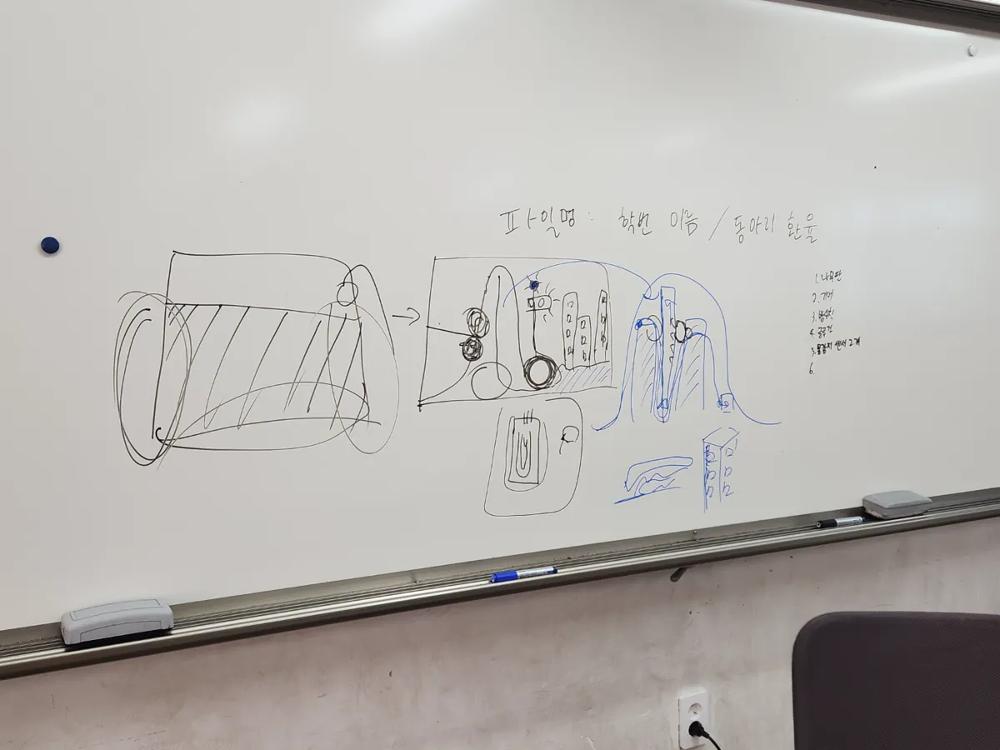
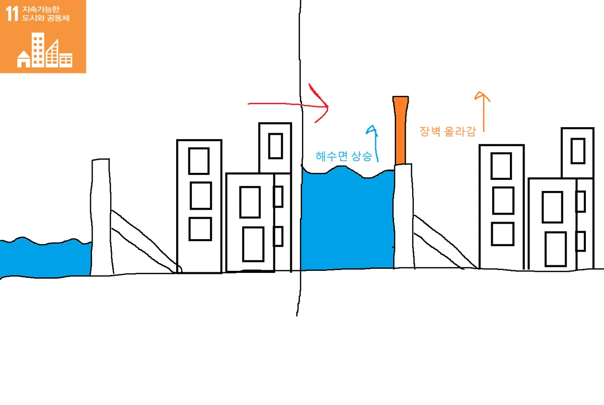

2024 지속 가능한 발전 프로젝트
해안 장벽
시스템
팀원 · 아두이노 개발 총괄 · 4인 팀
바다가 높아질 때,
도시 앞의 장벽도 올라갑니다.
기후 위기로 인한 해수면 상승에 대비한 해안 장벽 MVP입니다. 수조 안에 가상의 도시와 바다를 만들고, 이를 분리하는 장벽을 설계해 해수면 상승 시나리오를 구현했습니다.
센서와 장벽의 제어를 맡아 아두이노 프로그래밍과 배선, 방수 처리, QA와 디버깅을 진행했습니다.
아이디어가
실물로 바뀐 순간.
손으로 그린 작동 구조와 실제 수조 속 시제품을 한 화면에서 비교합니다.

그림에서 수조까지.



제가 맡은 것.
- 서브 기획
- 아두이노 프로그래밍
- 아두이노 배선
- 장벽 방수 처리
- 물자 파밍 및 조달
- 간식 지원
- 발표
- QA와 디버깅
- 그 외 다수
아이디어를 설명하는 데서 끝내지 않고,
물이 들어간 수조 안에서 직접 확인했습니다.